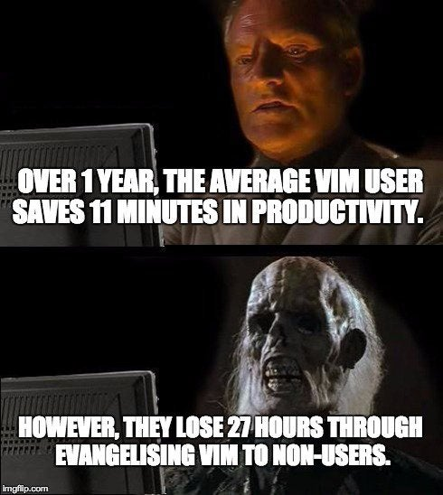

My .vimrc
This is what i use
smrpn. 1st April, 2021.
I have been using the ultimate gawd code editor, i.e, vim for almost a year now. And, as a result, my annual productivity has increased by almost 11 seconds.

So this is the post where I share my vim config with the muggles.
syntax enable
set statusline&
set noerrorbells
set tabstop=4
set shiftwidth=4
set expandtab
set smartindent
set nu
set nowrap
set smartcase
set noswapfile
set nobackup
set undodir=~./vim/undodir
set undofile
set incsearch
set cursorline
set colorcolumn=80
highlight ColorColumn ctermbg=0 guibg=lightgrey
autocmd BufNewFile *.cpp 0r ~/.vim/templates/skeleton.cpp
autocmd FileType cpp nnoremap <leader>rm :!g++ -g --std=c++17 % -o %:r<CR>
"autocmd FileType cpp nnoremap <leader>rm :set makeprg=g++<CR>:make % -o %:r<CR>
autocmd FileType cpp nnoremap <leader>rr :!./%:r<CR>
autocmd FileType cpp nnoremap <leader>rt :!for f in %:r.*.test; do echo "TEST: $f"; ./%:r < $f; done<CR>
let mapleader=" "
call plug#begin('~/.vim/plugged')
Plug 'vim-airline/vim-airline'
Plug 'morhetz/gruvbox'
Plug 'ajmwagar/vim-deus'
Plug 'jremmen/vim-ripgrep'
Plug 'tpope/vim-fugitive'
Plug 'leafgarland/typescript-vim'
Plug 'vim-utils/vim-man'
Plug 'lyuts/vim-rtags'
Plug 'kien/ctrlp.vim'
Plug 'ycm-core/YouCompleteMe'
Plug 'mbbill/undotree'
Plug 'rust-lang/rust.vim'
call plug#end()
colorscheme gruvbox
set background=dark
if executable('rg')
let g:rg_derive_root='true'
endif
" ag is fast enough that CtrlP doesn't need to cache "
let g:ctrlp_use_cache = 0
let g:netrw_winsize = 25
let g:netrw_banner = 0
let g:netrw_browse_split = 2
inoremap {<CR> {<CR>}<Esc>ko
inoremap [<CR> [<CR>]<Esc>ko
inoremap (<CR> (<CR>)<Esc>ko
nnoremap <leader>ps :Rg<SPACE>
nnoremap <leader>ghw :h <C-R>=expand("<cword>")<CR><CR>
nnoremap <leader>prw :CocSearch <C-R>=expand("<cword>")<CR><CR>
nnoremap <leader>bs /<C-R>=escape(expand("<cWORD>"), "/")<CR><CR>
nnoremap <leader>u :UndotreeShow<CR>
nnoremap <Leader><CR> :so ~/.config/nvim/init.vim<CR>
nnoremap <Leader>+ :vertical resize +5<CR>
nnoremap <Leader>- :vertical resize -5<CR>
nnoremap <Leader>rp :resize 100<CR>
nnoremap <Leader>ee oif err != nil {<CR>log.Fatalf("%+v\n", err)<CR>}<CR><esc>kkI<esc>
nnoremap <Leader>cpu a%" PRIu64 "<esc>
vnoremap J :m '>+1<CR>gv=gv
vnoremap K :m '<-2<CR>gv=gv
map <C-q> :bnext<CR>
nnoremap <leader>pv :wincmd v<bar> :Ex <bar> :vertical resize 30<CR>
"nmap <silent> <Leader>gd <Plug>(coc-definition)
nnoremap <silent> <Leader>gd :YcmCompleter GoTo<CR>
nnoremap <silent> <Leader>gf :YcmCompleter FixIt<CR>
inoremap (; (<CR>);<C-c>O
inoremap (, (<CR>),<C-c>O
inoremap {; {<CR>};<C-c>O
inoremap {, {<CR>},<C-c>O
inoremap [; [<CR>];<C-c>O
inoremap [, [<CR>],<C-c>O
To use this, paste the above content to your .vimrc file.
Then run the following commands in NORMAL mode -
:w
:source %
:PlugInstall
This is how your vim should look now -

Download vim from www.vim.org/download.php